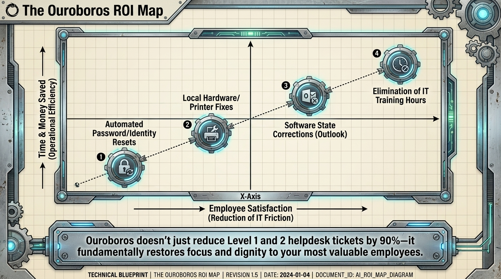
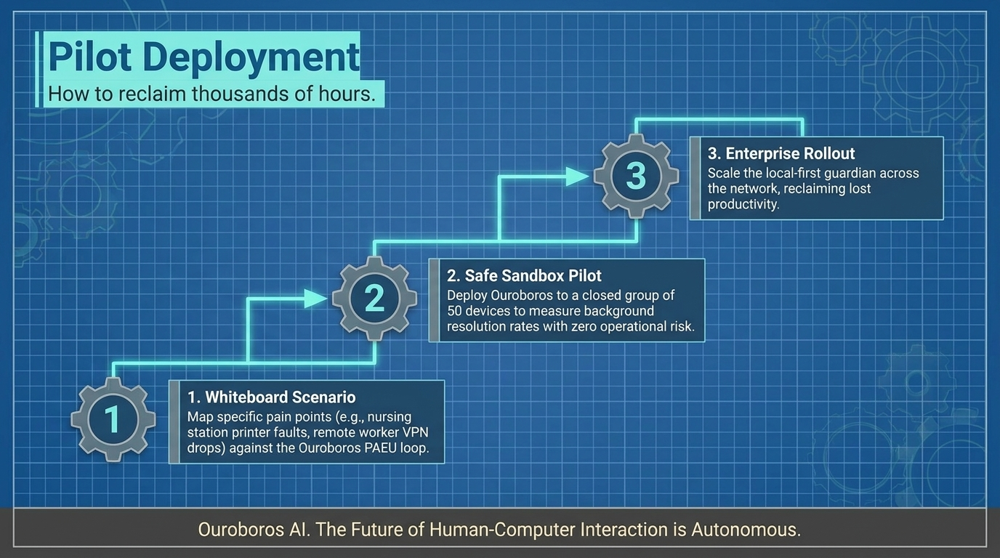

Corrections matériel et imprimante locaux
Les problèmes récurrents d'appareils sont corrigés sans transfert.
ROI et pilote
Ouroboros réduit les tickets helpdesk Level 1 et 2 et restaure la concentration et la dignité des personnes qui font le travail.

La carte ROI Ouroboros
Ouroboros ne réduit pas seulement les tickets helpdesk Level 1 et 2 de 90%. Il restaure concentration et dignité aux employés les plus précieux.
Les problèmes récurrents d'appareils sont corrigés sans transfert.
Le guidage apparaît au moment exact du besoin.
La friction d'authentification est résolue localement là où vit l'état.
Les corrections Outlook et Office se produisent avant que la journée ne déraille.
Déploiement pilote

Ouroboros AI
Commencez par les moments de support dont votre organisation sait déjà qu'ils coûtent cher.